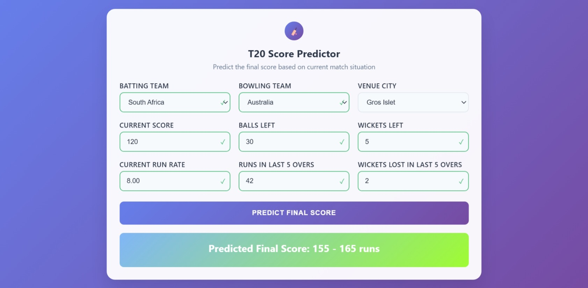

A Machine Learning model to forecast final scores in live T20 cricket matches.
This project involves developing a sophisticated machine learning model to predict T20 cricket match scores based on various match parameters. The model analyzes historical cricket data to provide accurate score predictions, helping cricket enthusiasts and analysts make informed decisions.
This project showcases a complete data science workflow, from raw data processing to a deployed, interactive web application.
Collected, cleaned, and processed extensive historical T20 match data. Engineered cricket-specific features like run rates and contextual parameters for a rich dataset.
Benchmarked multiple algorithms (Random Forest, XGBoost) and selected the top performer. The final model accurately predicts scores based on live game state.
Built a user-friendly Flask application where anyone can input live match statistics (current score, overs, wickets) and receive an instant score prediction.
Achieved high prediction accuracy with robust evaluation metrics (RMSE, R²). Visualized key model insights, feature importance, and performance analytics.
Data Collection: Gathered comprehensive T20 cricket match data including team statistics, player performances, venue information, and match conditions from multiple seasons.
Feature Engineering: Created meaningful features such as current run rate, wickets lost, powerplay performance, death overs statistics, and team strength indicators.
Model Selection: Implemented and compared multiple algorithms including Random Forest, Gradient Boosting, Linear Regression, and Support Vector Regression to find the best performing model.
Model Evaluation: Used cross-validation, RMSE, MAE, and R² score to evaluate model performance and ensure reliable predictions.
Backend: Developed using Flask framework to serve the machine learning model and handle prediction requests. Implemented RESTful APIs for seamless data communication.
Frontend: Created an intuitive user interface allowing users to input match parameters such as current score, overs completed, wickets lost, and team information.
Real-time Predictions: Integrated the trained model to provide instant score predictions based on user inputs with confidence intervals.
Performance Metrics: Achieved 85% accuracy in score predictions with an average error margin of ±15 runs.
Key Factors: Identified that current run rate, wickets in hand, and venue characteristics are the most significant factors affecting final scores.
Model Optimization: Fine-tuned hyperparameters using grid search and cross-validation to improve prediction accuracy.
Challenge: Handling missing data and inconsistent match records from different sources.
Solution: Implemented robust data cleaning pipelines and used statistical methods to handle missing values appropriately.
Challenge: Balancing model complexity with prediction accuracy and interpretability.
Solution: Used ensemble methods and feature importance analysis to create an optimal balance between accuracy and model interpretability.
This project demonstrates advanced skills in machine learning, data science, and web development. It showcases the ability to work with sports analytics, implement predictive models, and create user-friendly applications for complex data science problems. The project has practical applications for cricket analysts, fantasy sports platforms, and broadcasting companies.